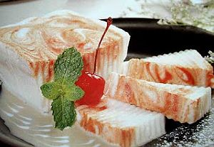

Puding Marmer Mocca

Bahan :
- 1 bungkus(7gr) agar-agar putih
- 60 gr gula pasir
- 400 ml cair susu tawar
- 2 butir kuning telur
- 3 butir putih telur
- 1/2 sdm pastamoka
- 1/8 sdt garam halus
- 1 sdm rum
Saus Coklat:
- 15 gr tepung maizena
- 60 gr gula pasir
- 20 gr coklat bubuk
- 500 ml susu tawar cair
- 2 butir kuning telur, kocok lepas
- ½ sdm mentega
- 1/8 sdt garam
Cara Membuat :
- Campur agar-agar, gula, garam dan susu tawar cair, aduk rata. Didihkan di atas api sedang sambil diaduk, angkat. Selagi panas, masukkan kuning telur, aduk rata.
- Ditempat terpisah, kocok putih telur hingga kaku. Selagi panas, masukkan adonan puding ke dalam kocokan putih telur sambil dikocok terus menggunakan mixer.
- Ambil 1/3 adonan agar-agar, masukkan pasta moka, aduk rata. Masukkan adonan agar putih ke dalam loyang puding. Tuang adonan moka di atasnya. Aduk menggunakan garpu secara memutar agar terbentuk motif marmer. Setelah dingin, keluarkan dari cetakkan. Potong-potong.
- Saus Cokelat:
Larutkan tepung maizena, cokelat bubuk, gula, garam dalam susu tawar cair. Aduk rata, saring. Panaskan di atas api kecil, sambil terus diaduk-aduk hingga tekstur mengental. Angkat. Selagi hangat, tambahkan mentega dan kuning telur, aduk rata. Saus siap disajikan sebagai pelengkap puding.